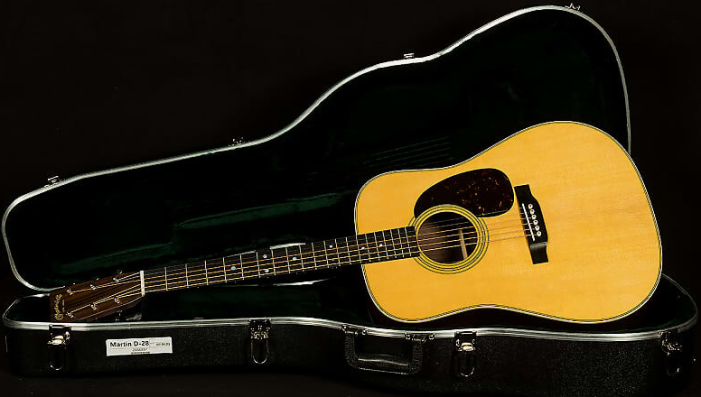
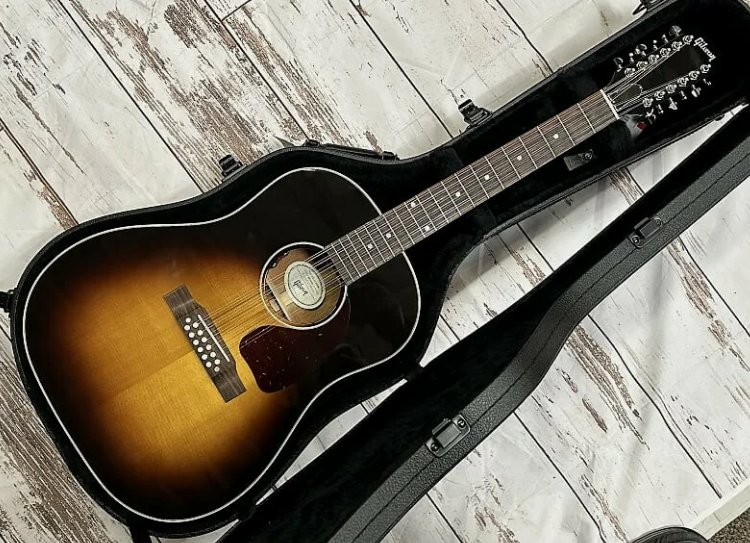
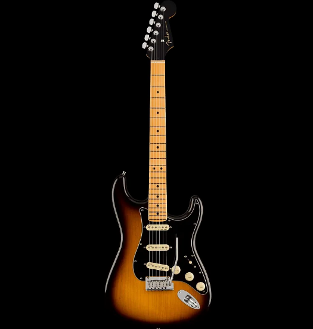
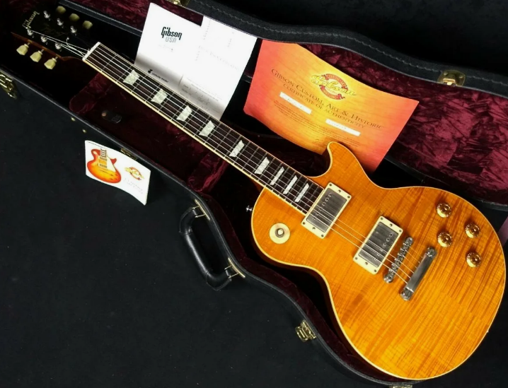
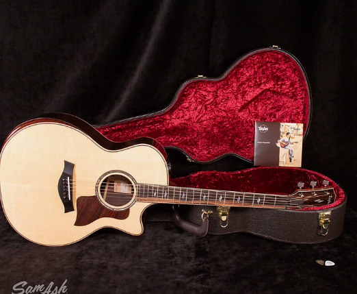
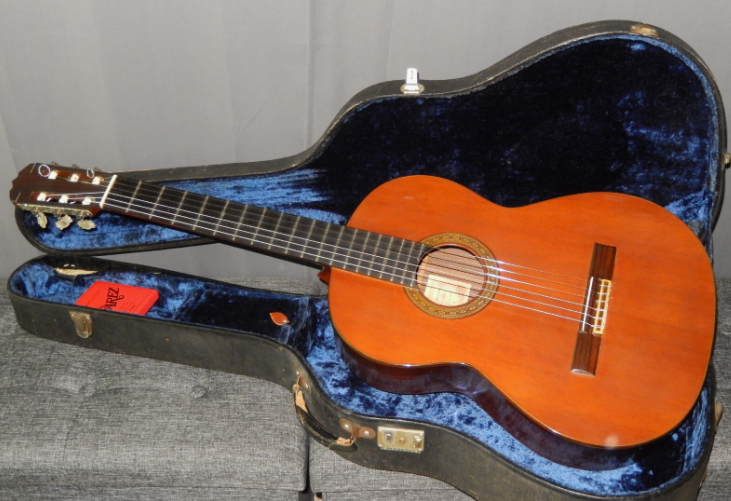

Модели, которые изменили звук музыки навсегда. У каждой из них — своя эпоха, свои легендарные владельцы и уникальный голос, узнаваемый миллионами.

Martin D-28
Этот дредноут считается эталоном акустической гитары. Выпускается с 1931 года и стал выбором таких легенд, как Элвис Пресли, Джонни Кэш и Курт Кобейн. Её мощный, объёмный звук идеально подходит для фолка, кантри и рок-баллад.
от 189 990 ₽

Gibson J-45
«Рабочая лошадка» Gibson, появившаяся в 1942 году. Её тёплый, чуть приглушённый звук сделал её любимицей фолк- и рок-музыкантов. На ней играли Боб Дилан и Джон Леннон. Она и сегодня остаётся одной из самых записываемых акустических гитар в мире.
от 199 990 ₽

Fender Stratocaster
Икона рока, представленная в 1954 году. Её узнаваемый дизайн, три сингловых звукоснимателя и удобный гриф покорили миллионы. Легендарные владельцы: Джими Хендрикс, Эрик Клэптон, Дэвид Гилмор. Stratocaster звучал на величайших рок-записях всех времён.
от 89 990 ₽

Gibson Les Paul
Рождённая в 1952 году, эта гитара стала символом хард-рока и хэви-метала. Мощные хамбакеры, массивный корпус из махагони и невероятный сустейн. На ней играли Джимми Пейдж, Слэш и Закк Уайлд. Les Paul — это голос рок-н-ролльного драйва.
от 159 990 ₽

Taylor 814ce
Современная классика от американского бренда Taylor. Появившись в 1990-х, эта модель покорила музыкантов своим ярким, кристально чистым звуком и безупречной сборкой. Её выбирают такие артисты, как Джейсон Мраз и Зак Браун. Идеальный баланс для студии и сцены.
от 234 990 ₽

Ramirez 1A
Эталон классической гитары испанской школы. Созданная мастерской Ramirez в 1960-х, она стала выбором Андреса Сеговии и многих других виртуозов. Её тёплое, глубокое звучание — это голос испанской музыки и фламенко. Ручная работа, редкие породы дерева, высочайшее качество.
от 349 990 ₽
Каждая из этих гитар оставила след в истории музыки. Найдите ту, чей голос отзовётся в вашем сердце.